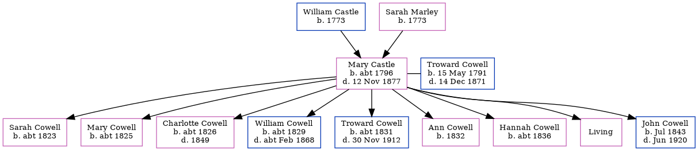

Susan Vogt (née Supko)
| [ Calendar ] | [ Surnames Index ] | [ Census Index ] | [ Family History ]Susan Supko and had 1 child with Albert Vogt: Albert Robert.
Children
- Albert Robert was born on May 26, 1928
Family Tree
Generated by ged2site. Last updated on Jun 13, 2024